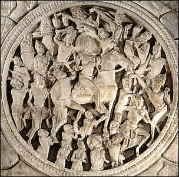

The Great Departure
Once Siddhartha had seen suffering in the world outside the palace walls, he vowed to go out into the world to seek greater spiritual understanding. One night, he crept out of the palace leaving behind his wife, his son and all worldly possessions except for his horse. In this scene, Prince Siddhartha rides his horse out of the palace grounds. Several dwarves or ganas hold up the horse's hooves so that the prince is able to get away without waking anyone at the palace. The horse is led out by Siddhartha's groom, Chandaka, who carries a staff. |